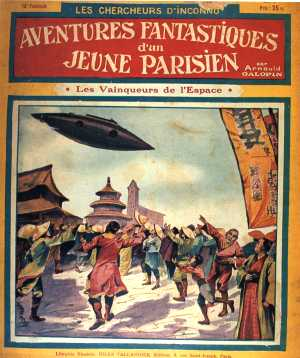

Couverture du n° des aventures fantastiques d'un jeune parisien, montrant un véhicule "idéal" différent d'un
dirigeable et d'un aéroplane
 différent d'un dirigeable et d'un aéroplane " border="0" />
Parution de l'histoire de fiction d'un enfant intelligent et intrépide, brave jusqu'à la témérité
qui, en compagnie de 2 savants amoureux, dans les espaces infinis, se lance résolument dans les plaines de l'air sur
un véhicule idéal qui n'a rien de commun avec le ballon dirigeable ou l'aéroplaneGalopin, Arnould: "Les Vainqueurs de l'espace", Les Chercheurs d'inconnu : aventures fantastiques d'un jeune parisien, n° 12, 6 février 1909, 32 p. Illustration de Tallandier, E. Board.